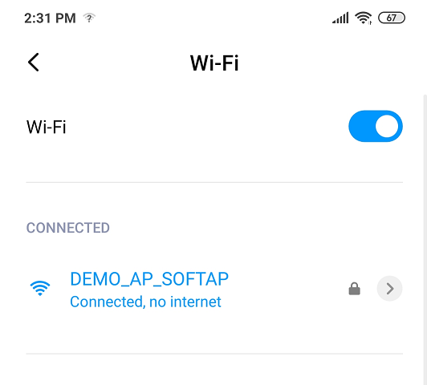

Wi-Fi Provisioning Methods
Command line
MHC configuration menu for Command line(CLI):

Enable Check box "Command Line(CLI)" to include CLI Wi-Fi provisioning method.
After making configuration changes, generate the code.
Compile the project and load the image into device.
Wi-Fi Provisioning commands Details
| Command | Details | Example |
|---|---|---|
| wifiprovhelp | Wi-Fi Provision System Service help command | wifiprovhelp |
| wifiprov set <bootmode> <save config> <country code> <channel> <auto_connect> <authtype> <ssid_name> <psk_name> | Set Wi-Fi Configuration for Station(STA) mode | wifiprov set 0 1 "GEN" 0 1 3 "DEMO_AP" "password" |
| wifiprowifiprov set <bootmode> <save config> <country code> <channel> <ssid_visibility> <authtype> <ssid_name> <psk_name> | Set Wi-Fi Configuration for Access point(AP) mode | wifiprov set 1 1 "GEN" 1 1 3 "DEMO_SOFTAP" "password" |
| wifiprov get | Get Wi-Fi Configuration | wifiprov get |
Wi-Fi Provisioning commands command parameters information,
| Parameter | Sub Parameter |
|---|---|
| bootmode | 0 - Station(STA) mode.1- Access point(AP) mode. |
| save config | 0 - Do not save configuration in NVM(Program Flash Memory). 1- Save configuration in NVM . |
| country code | country code configuration: GEN - General USA - North America EMEA - Europe CUST1,CUST2 - Customer custom regulatory configuration |
| Channel | In Station mode value range from 0-13, 0 - select all the channels.1-13 - select specified channel. In Access point mode value range from 1-13. |
| auto connect(only applicable in STA mode) | 0 - Don't connect to AP, wait for client request.1 - Connect to AP. |
| ssid visibility (only applicable in AP mode) | 0 - Hidden SSID.1 - Broadcast SSID . |
| authtype(Security type) | 1 - OPEN Mode. 3 - WPAWPA2 (Mixed) mode. 4 - WPA2 mode. 5 - WPA2WPA3 (Mixed) mode. 6 - WPA3 mode. |
| ssid(ssid name) | SSID name |
| psk name(password) | Password/passphrase |
Note:
Wi-Fi Provisioning using command line method is not recommended in production release due to security concerns.
All commands the parameters are mandatory, and none are optional except for password in case of "open" authentication.
TCP Socket mode
MHC configuration menu for TCP Socket:
Enable Check box "TCP Socket" to include TCP Socket Wi-Fi provisioning method.
Modifiy the "Socket Server Port".Defult port number is 6666.
After making configuration changes, generate the code.
Compile the project and load the image into device.
Wi-Fi provisioning service can be configured to use TCP socket, a socket server is activated when the device boots.Use a laptop or mobile phone as a TCP client to connect to the device's socket server. Wi-Fi provisioning service defult TCP server port is 6666.
Wi-Fi provisioning with JSON format
User can send the below JSON format data from TCP Client to provisioning the device.
Example:
{
"mode": 0, "save_config": 1,"countrycode":"GEN",
"STA": { "ch": 0, "auto": 1, "auth": 3, "SSID": "DEMO_AP", "PWD":"password"},
"AP": {"ch": 2, "ssidv": 1, "auth": 4, "SSID": "DEMO_AP_SOFTAP", "PWD": "password" } } Details of JSON Parameters,
| Parameter | Sub Parameter | Value Details |
|---|---|---|
| mode | 0 - Station(STA) mode. 1- Access point(AP) mode. | |
| save_config | 0 - Do not save configuration in NVM. 1- Save configuration in NVM . | |
| STA | ch (Channel) | In Station mode value range from 0-13,0 - select all the channels.1-13 - select specified channel. |
| auto(auto connect) | 0 - Don't connect to AP, wait for client request. 1 - Connect to AP. | |
| Auth(Security type) | 1 - OPEN Mode.3 - WPAWPA2 (Mixed) mode. 4 - WPA2 mode. 5 - WPA3 mode. | |
| SSID(ssid name) | SSID name | |
| PWD(password) | Password/passphrase | |
| AP | ch (Channel) | In Access point mode value range from 1-13 |
| ssidv(ssid visibility) | 0 - Hidden SSID. 1 - Broadcast SSID . | |
| Auth(Security type) | 1 - OPEN Mode. 3 - WPAWPA2 (Mixed) mode. 4 - WPA2 mode. 5 - WPA2WPA3 (Mixed) mode. 6 - WPA3 mode. | |
| SSID(ssid name) | SSID name | |
| PWD(password) | Password/passphrase | |
Wi-Fi provisioning with Mobile Application
Follow below steps to provisioning the device using mobile application:
Download and install the mobile application "Wi-Fi Provisioning" from Android play store.
Start PIC32MZW1 device in AP mode (Configure Wi-Fi Service "Device Mode" as "AP").
Using mobile Wi-Fi setting, make a Wi-Fi connection to PIC32MZW1 AP Mode.

Open the "Wi-Fi Provisioning" application.
Enter PIC32MZW1 IP address as Server IP in the mobile application.
Enter the Wi-Fi provisioning System Service configured port number.

SCAN near by HOMEAP and select the desired HOMEAP.
Enter the password.

User can manually add provisioning information using "Add New Network" option also.

After provisioning the device reboot and connect to HOMEAP.
Sending the TCP data without mobile application: Using laptop or mobile phone as TCP client,user can send the TCP data in below format to provisioning the device.
TCP Data Format : apply,<ssid>,<Auth>,<password>,NULL
| Parameter | Details |
|---|---|
| ssid(ssid name) | SSID name |
| Auth (security type) | 1- OPEN MODE 2 - WPA2 Mode |
| psk name(password) | Password/passphrase |
HTTP
Webpage using HTTP
MHC configuration menu for HTTP (unsecure):

Enable Check box "HTTP" to include Wi-Fi provisioning using webpage.
press "Yes"for components inclusion pop-up.
When user enable "HTTP" checkbox only, defualt wi-f provising method enable with port number 80.
After making configuration changes, generate the code.
Compile the project and load the image into device.
Follow below steps to provisioning the device using HTTP:
Start PIC32MZW1 device in AP mode (Configure Wi-Fi Service "Device Mode" as "AP").
Connect Laptop or mobile phone to PIC32MZW1 AP device.
Open the browser and enter the PIC32MZW1 AP IP address(example: http://192.168.1.1/).

Goto "Network Configuratio" page.
There are two ways of configuring a wifi network: "Scan and Connect to Wifi Network", and "Static Wifi Configuration".

In case of "Scan and Connect", one can scan (press the 'Start Scan' button) for the available APs in the vicinity and connect to the AP of one's choice.

Click on the AP from the list, you want to connect to. In case of secured AP, the user needs to give the password.

In case of Hidden Networks, the SSID of the AP will not be visible. In this case, the user will need to give both SSID and the password.

For "Static Wifi Configuration", update the Configuration details and click on "Apply Wi-Fi Configuration".

Device will reboot and apply configuration in the device.
HTTP functionality is also supported in station(STA) mode.
Webpage using HTTPNET (Un-Secure)
MHC configuration menu for HTTPNET(Unsecure):

Follow below steps to enable to HTTPNET unsecure,
Enable Check box "Enable HTTPNET".
Configure "Server port".User can configure any valid port number.
Enable Check box "HTTP" and press "Yes"for components inclusion pop-up.
After making configuration changes, generate the code.
Compile the project and load the image into device.
Follow below steps to provisioning the device using HTTP:
Start PIC32MZW1 device in AP mode (Configure Wi-Fi Service "Device Mode" as "AP").
Connect Laptop or mobile phone to PIC32MZW1 AP device.
Open the browser and enter the PIC32MZW1 AP IP address with port number(example: http://192.168.1.1:401/).
Goto "Network Configuratio" page.
Update the Configuration details and click on "Apply Wi-Fi Configuration"
Device will reboot and apply configuration in the device.
Webpage using HTTPNET (Secure)
MHC configuration menu for HTTPNET(secure):

Follow below steps to enable HTTPNET secure,
Enable Check box "Enable HTTPNET".
Enable check box "Enable Secure Connection with HTTPNET"
Configure "Server port".User can configure any valid port number.
Enable Check box "HTTP" and press "Yes"for components inclusion pop-up.
After making configuration changes, generate the code.
Compile the project and load the image into device.
Follow below steps to provisioning the device using HTTP:
Start PIC32MZW1 device in AP mode (Configure Wi-Fi Service "Device Mode" as "AP").
Connect Laptop or mobile phone to PIC32MZW1 AP device.
Open the browser and enter the PIC32MZW1 AP IP address with port number(example: https://192.168.1.1:443/).
Goto "Network Configuratio" page.
Update the Configuration details and click on "Apply Wi-Fi Configuration"
Device will reboot and apply configuration in the device.